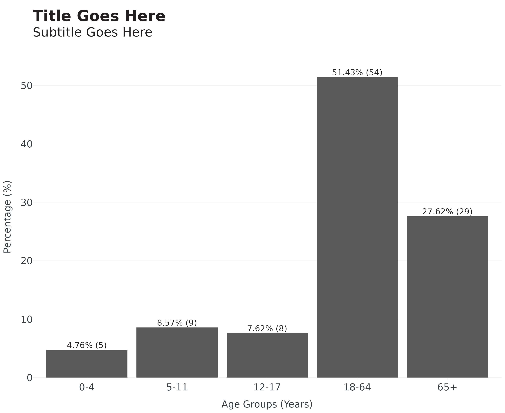
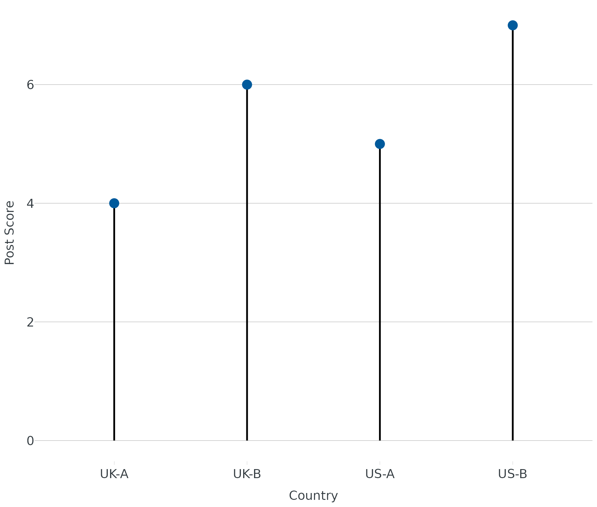
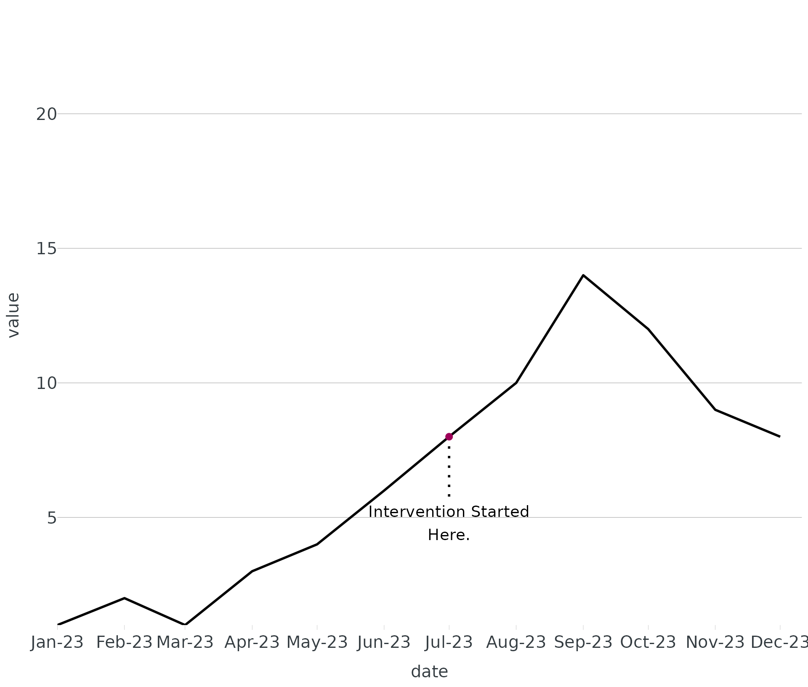
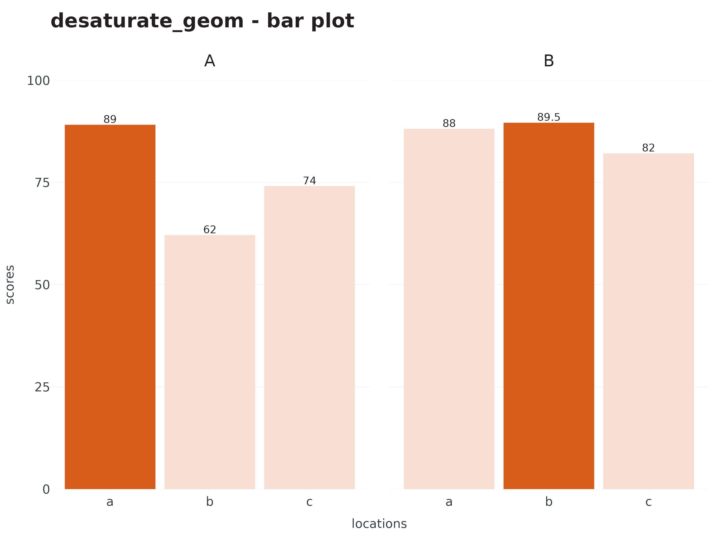
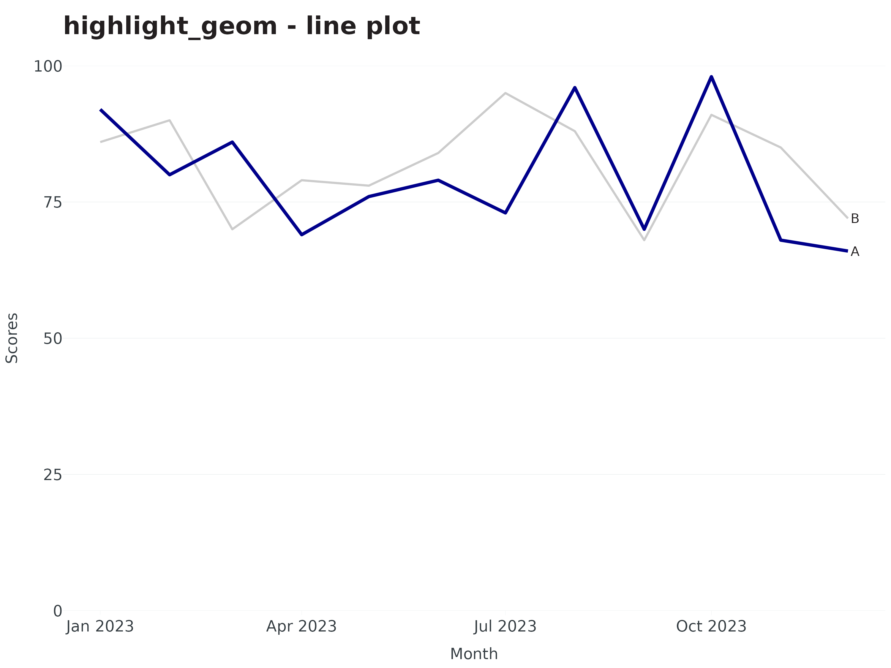
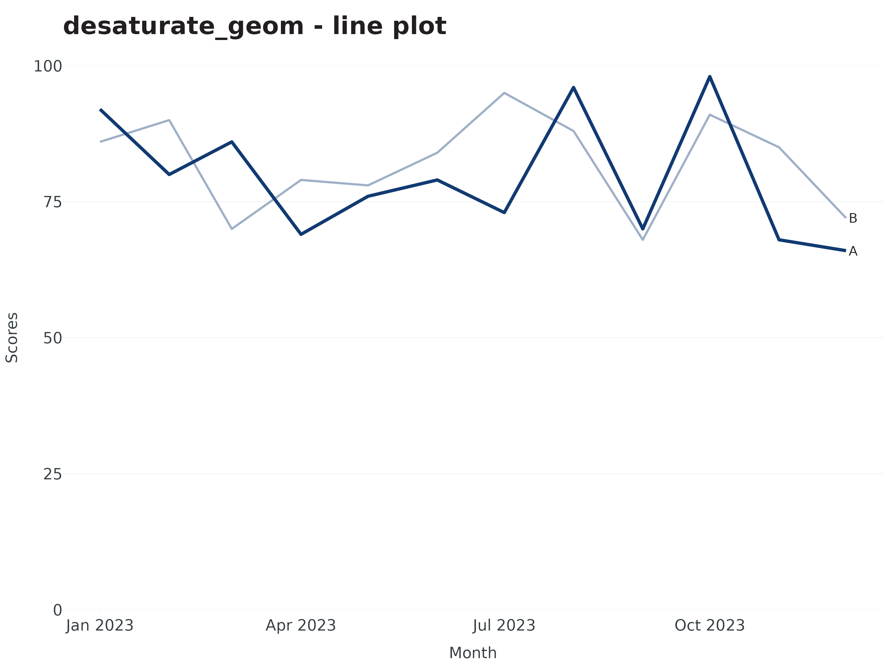
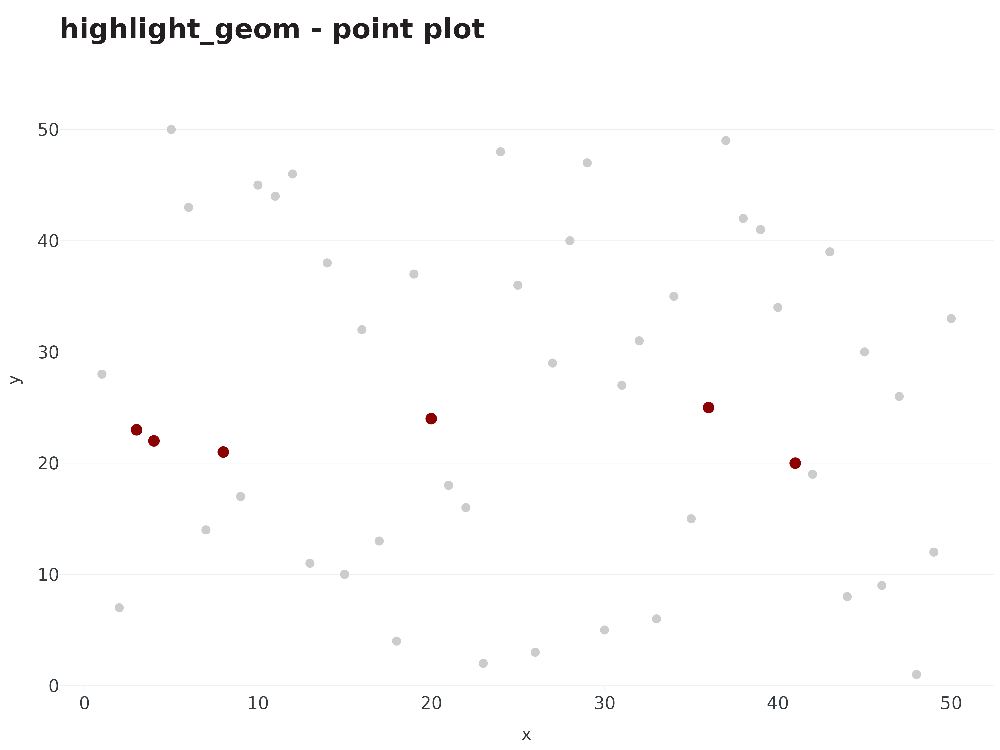
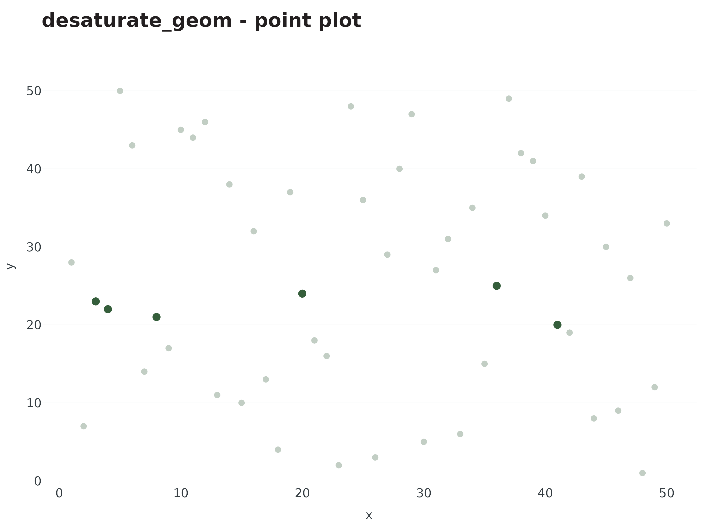

Extending ggplot2
extending-ggplot2.RmdCore functions:
-
theme_apollo- minimal, clean theme for plots -
apollo_label- labels that match branding aesthetic -
end_points- subset data at last time series data point -
wrap_labels- wrap long axis labels to better fit plot -
geom_dumbbell- dumbbell plot -
geom_lollipop- lollipop plot -
highlight_title- color specific words in ggplot2 for emphasis -
highlight_geom- highlight geom_* of interest based on expression -
desaturate_geom- desaturate geom_* of interest based on expression
theme_apollo & apollo_label
Basic plot using ggplot2:
linelist %>%
count(age_group) %>%
ggplot(aes(x = age_group, y = n)) +
geom_col() +
labs(
title = "Title Goes Here",
subtitle = "Subtitle Goes Here",
x = "Age Groups (Years)",
y = "Percentage (%)"
)
Now applying theme_apollo and apollo_label.
Note: when using coord_flip for horizontal bar charts, set
direction to “horizontal” within
theme_apollo.
linelist %>%
count(age_group) %>%
mutate(
percent = add_percent(n),
label = n_percent(n, percent, reverse = TRUE)
) %>%
ggplot(aes(x = age_group, y = percent, label = label)) +
geom_col() +
scale_y_continuous(expand = c(0,0), limits = c(0,55)) +
theme_apollo(direction = "vertical") +
labs(
title = "Title Goes Here",
subtitle = "Subtitle Goes Here",
x = "Age Groups (Years)",
y = "Percentage (%)"
) +
apollo_label(vjust = -0.3)
end_points
For line plots with >1 group, it is recommended to direct label
groups. For line plots, end_points will subset the data to
the last date in a time series, even if groups end at different dates
(thank you Butte County for the suggestion).
set.seed(1234)
year2023 <- seq.Date(as.Date("2023-01-01"), as.Date("2023-12-01"), by = "month")
ts <- data.frame(
Month = rep(year2023,2),
Site = c(rep("A",12), rep("B",12)),
Scores = c(sample(65:99, 12), sample(65:99, 12))
)
ggplot(data = ts, aes(x = Month, y = Scores, group = Site, linetype = Site, colour = Site)) +
geom_line(linewidth = 1) +
scale_x_date(breaks = ts$Month, date_labels = "%b\n%Y") +
scale_y_continuous(expand = c(0,0), limits = c(0,100)) +
theme_apollo(direction = "vertical") +
scale_colour_manual(values = c(A = "blue", B = "red")) +
apollo_label(data = end_points(ts, Month), aes(label = Site), hjust = 0) +
labs(
title = "Comparison of Treatment Groups Over Time\n",
x = "Date",
y = "Percentage (%)"
)
wrap_labels
For categories with long titles (e.g. race/ethnicity), you may need
to wrap text to better fit under/next to the axis. Use
width argument to adjust amount of wrapping (lower width =
more wrapping, higher width = less wrapping).
Without wrapping:
re <- data.frame(group = c("Native Hawaiian or Other Pacific Islander","Black or African American","American Indian or Alaska Native"), score = c(89.5, 84, 73))
ggplot(data = re, aes(x = group, y = score, label = score)) +
geom_col() +
theme_apollo(direction = "vertical") +
scale_y_continuous(expand = c(0,0), limits = c(0,100)) +
labs(
title = "Outcomes Across Select Race/Ethnicity\n",
x = "Race/Ethnicity",
y = "Percentage (%)"
) +
apollo_label(vjust = -0.3)
With wrapping:
ggplot(data = re, aes(x = group, y = score, label = score)) +
geom_col() +
scale_x_discrete(labels = wrap_labels(width = 15)) +
theme_apollo(direction = "vertical") +
scale_y_continuous(expand = c(0,0), limits = c(0,100)) +
labs(
title = "Outcomes Across Select Race/Ethnicity\n",
x = "Race/Ethnicity",
y = "Percentage (%)"
) +
apollo_label(vjust = -0.3)
geom_dumbbell
Dumbbell plots consist of two points connected by a solid line. Useful in showing changes in pre/post test scores or timelines. Dataset requires two x variables (x and xend) and y variable (usually character/factor).
- To customize the points, use colour_x, colour_end, and size.
- To customize line, use colour and linewidth.
pre_post <- data.frame(Country = c("UK-A","US-A","UK-B","US-B"), PRE = c(0,1,2,3), POST = c(4,5,6,7))
ggplot(data = pre_post, aes(x = PRE, xend = POST, y = Country)) +
geom_dumbbell(colour_x = "red", colour_xend = "blue", size = 5, linewidth = 2, colour = "black") +
labs(title = "Dumbbell Plot", x = "Pre/Post Scores", y = "Country") +
theme_apollo(direction = "vertical")geom_lollipop
Lollipop plot is similar to dumbbell plot, but has only one point with a stem.
- To customize the stem, use line.colour, linewidth, and linetype (default stem color is black.)
- To customize point, use size and color.
- For most plots, set
yend = 0.
ggplot(data = pre_post, aes(x = Country, y = POST, yend = 0)) +
geom_lollipop(color = cdcd_color("orange"), line.colour = "#000000", size = 5, linewidth = 1) +
labs(title = "Lollipop Plot", x = "Country", y = "Post Score") +
theme_apollo(direction = "vertical")
An alternate use case for geom_lollipop is labeling
specific dates in time series plot.
set.seed(1234)
df <- data.frame(
type = "a",
date = seq.Date(from = as.Date("2023-01-01"), to = as.Date("2023-12-01"), by = "month"),
value = c(1,2,1,3,4,6,8,10,14,12,9,8),
stringsAsFactors = FALSE
)
peak_date = as.Date("2023-07-01")
peak_n = 8
ggplot(df, aes(x = date, y = value)) +
geom_line(linewidth = 1) +
annotate("text", x = peak_date, y = peak_n * 0.65, label = "Intervention Started\nHere.") +
geom_lollipop(data = filter(df, date == peak_date), aes(x = date, y = value, yend = value * 0.7), color = cdcd_color("london pink"), line.colour = "#000000", linetype = "dotted", size = 2.5) +
scale_x_date(expand = expansion(add = c(0,10)), breaks = "month", date_labels = "%b-%y") +
scale_y_continuous(expand = expansion(add = c(0,10))) +
theme_apollo(direction = "vertical") +
labs(
title = "Labeling line plot with geom_lollipop\n",
x = "Date",
y = "No. of Observations"
)
highlight_geom & desaturate_geom
When making data visualizations, emphasizing certain data points and
de-emphasizing others helps the viewer see the takehome message. This
can be achieved using colors against gray or lightening certain groups
to help the main group jump out. {OCepi} providers two ways to do this:
highlight_geom and desaturate_geom.
highlight_geom requires two basic arguments - 1) an
expression (similar to what you’d use in dplyr::filter),
and 2) a color for highlighting. Although sensible defaults are
built-in, the following additional arguments within
highlight_geom can be customized:
- size (
geom_point) - linewidth (
geom_line,geom_sf)
Please note: the default fade color/fill for
highlight_geom is light grey (#cccccc). To override, add
fill/color to geom_*
(e.g. geom_line(color = "black").
desaturate_geom requires the same two basic arguments as
highlight_geom plus desaturate (range 0-1, 1
highest level of desaturation). Instead of fading non-emphasized
categories to gray, they will retain color but be desaturated. Options
to customize include:
- size (points)
- linewidth (
geom_line,geom_sf)
If you’d like to highlight one or more words in your title to match,
you may use highlight_title. Please note this requires
package ggtext to work, and add this to your code chunk:
theme(plot.title = ggtext::element_markdown()).
Both highlighting approaches work with facet_wrap and
facet_grid. Currently works with
geom_col/geom_bar, geom_line,
geom_sf, and geom_point.
bar plot
highlight <- data.frame(
site = c("A","A","A","B","B","B"),
locations = rep(letters[1:3],2),
scores = c(89,62,74,88,89.5,82)
)
ggplot(data = highlight, aes(x = locations, y = scores, label = scores)) +
geom_col() +
facet_wrap(~site) +
highlight_geom(scores == max(scores), pal = cdcd_color("london pink")) +
scale_y_continuous(expand = c(0,0), limits = c(0,100)) +
theme_apollo(direction = "vertical") +
labs(
title = highlight_title("highlight_geom - bar plot<br>", words = c("highlight_geom" = cdcd_color("london pink"))),
) +
apollo_label(vjust = -0.3) +
theme(plot.title = ggtext::element_markdown())
ggplot(data = highlight, aes(x = locations, y = scores, label = scores)) +
geom_col() +
facet_wrap(~site) +
desaturate_geom(scores == max(scores), pal = "#d55c19", desaturate = 0.8) +
scale_y_continuous(expand = c(0,0), limits = c(0,100)) +
theme_apollo(direction = "vertical") +
labs(
title = "desaturate_geom - bar plot\n"
) +
apollo_label(vjust = -0.3)
Line plot
ggplot(data = ts, aes(x = Month, y = Scores, group = Site, label = Site)) +
geom_line(linewidth = 1) +
highlight_geom(Site == "A", pal = "darkblue", linewidth = 1.5) +
scale_y_continuous(expand = c(0,0), limits = c(0,100)) +
theme_apollo(direction = "vertical") +
labs(
title = "highlight_geom - line plot\n"
) +
apollo_label(data = end_points(ts, Month), hjust = -0.3)
ggplot(data = ts, aes(x = Month, y = Scores, group = Site, label = Site)) +
geom_line(linewidth = 1) +
desaturate_geom(Site == "A", pal = "#113a72", linewidth = 1.5, desaturate = 0.6) +
scale_y_continuous(expand = c(0,0), limits = c(0,100)) +
theme_apollo(direction = "vertical") +
labs(
title = "desaturate_geom - line plot\n"
) +
apollo_label(data = end_points(ts, Month), hjust = -0.3)
Point plot
points <- data.frame(
x = sample(1:50, 50),
y = sample(1:50, 50)
)
ggplot(data = points, aes(x = x, y = y)) +
geom_point(size = 3) +
highlight_geom(y %in% c(20:25), pal = "#8B0000", size = 4) +
scale_y_continuous(expand = c(0,0), limits = c(0,55)) +
theme_apollo(direction = "vertical") +
labs(
title = "highlight_geom - point plot\n"
)
ggplot(data = points, aes(x = x, y = y)) +
geom_point(size = 3) +
desaturate_geom(y %in% c(20:25), pal = "#355E3B", size = 4, desaturate = 0.7) +
scale_y_continuous(expand = c(0,0), limits = c(0,55)) +
theme_apollo(direction = "vertical") +
labs(
title = "desaturate_geom - point plot\n"
)